Im Spa
entspannen Siesich …
… und bringen Sie Körper, Geist & Seele streichelzart in Einklang.
Wasser und Wärme
1100 m²
Im Wellnesshotel Zurbriggen erwartet Sie eine exklusive 1.100 m² große Spa-Landschaft, inspiriert von der traditionellen chinesischen Medizin (TCM).
Info für Allergiker: Unser Badewasser ist chlorfrei und wird mit Ozon aufbereitet.
Wunschtermin anfragenKräutersauna
Dampfbad
Holzsauna
35 °C
Whirlpool · Aussenwhirlpool (Sommer)
29 °C
Schwimmbad
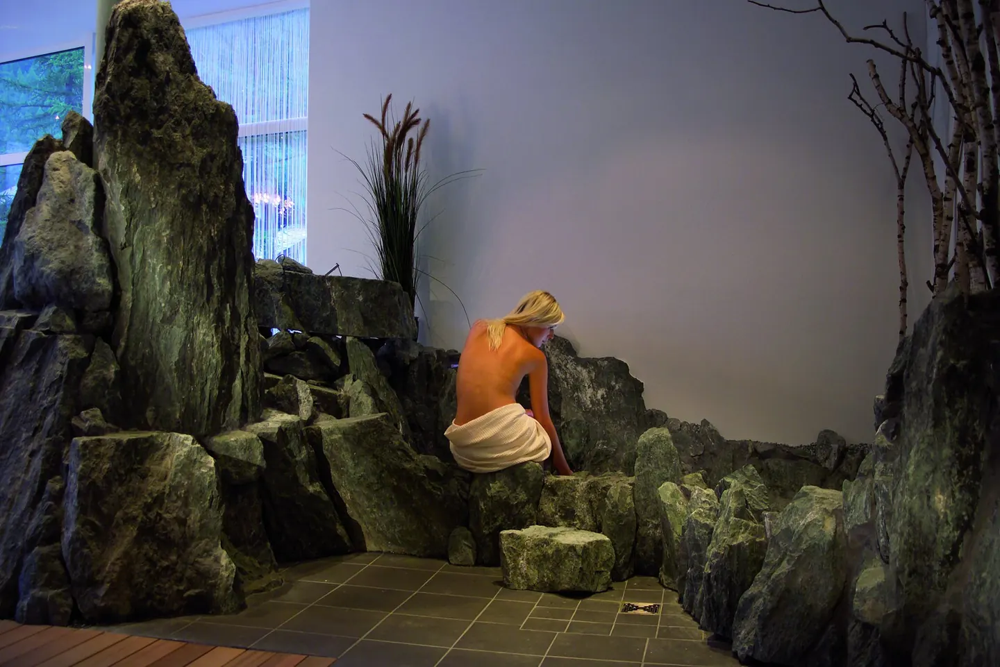
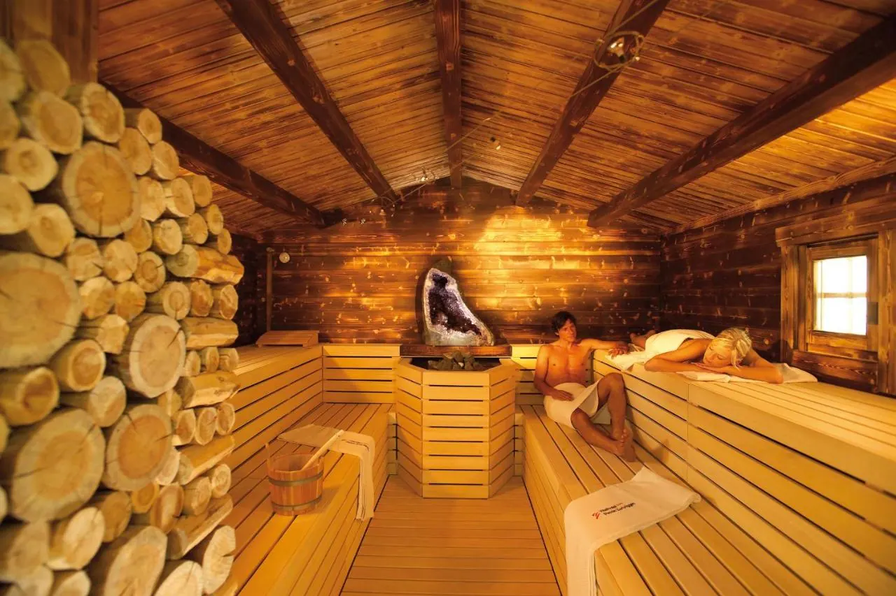
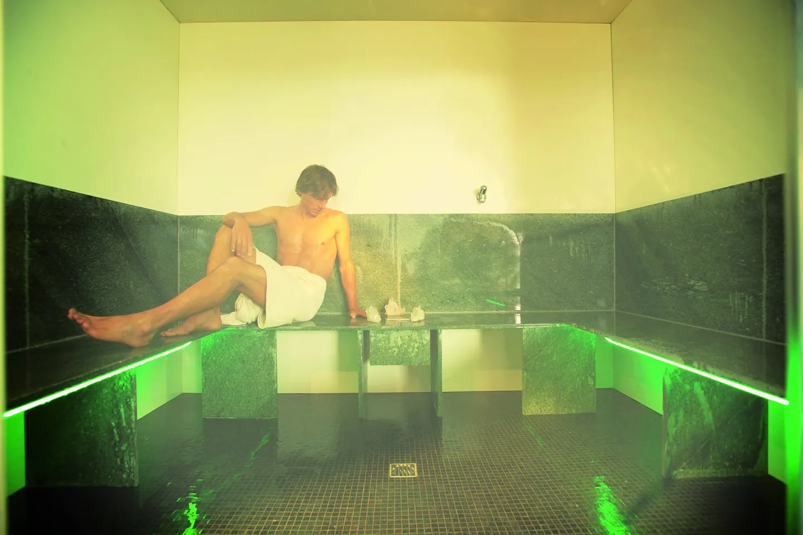
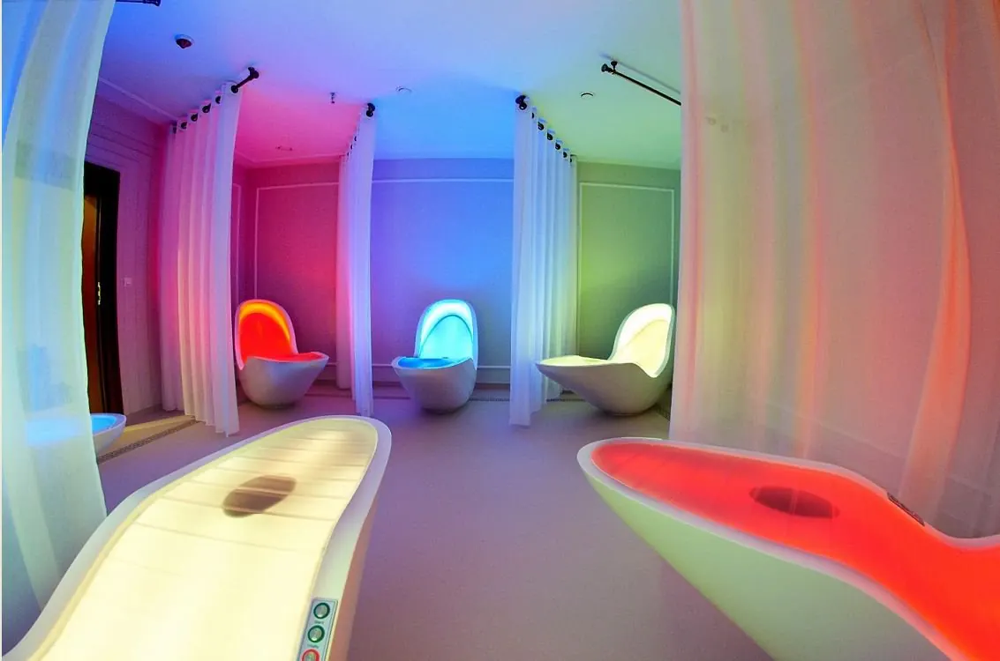
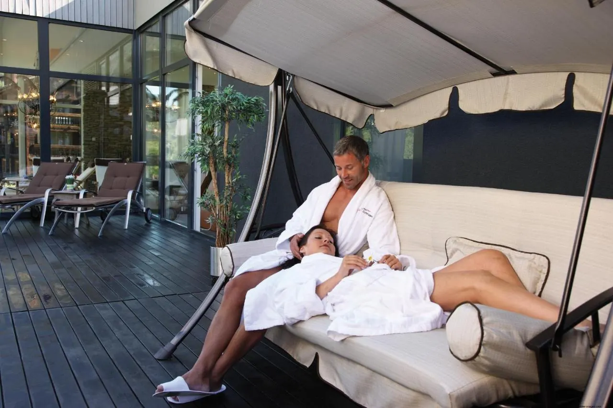
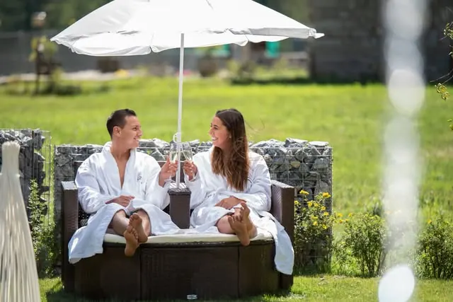
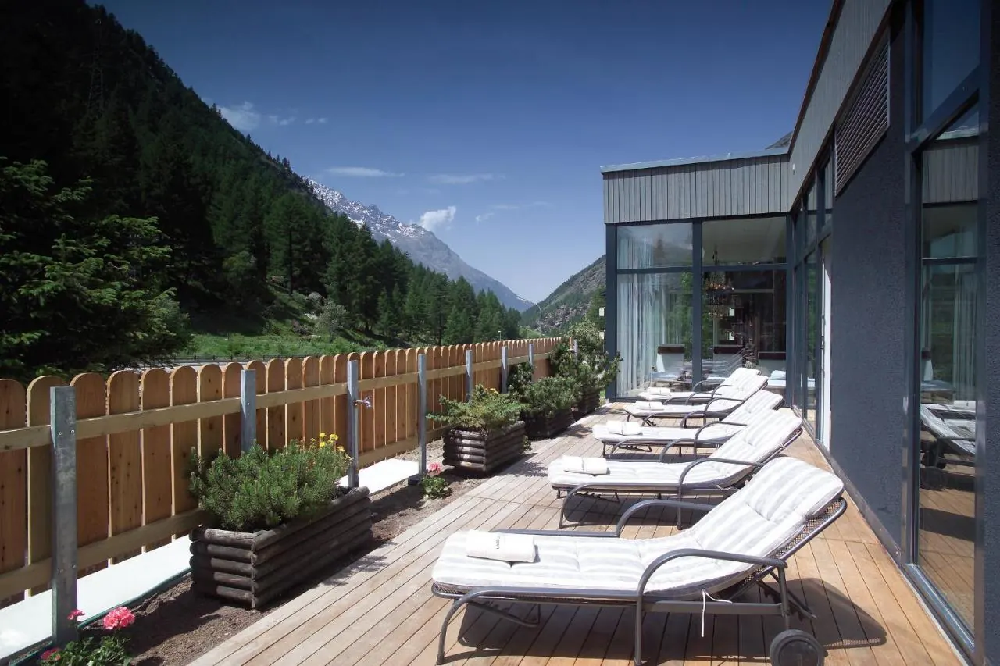
Oder trainieren Sie auf Eigeninitiative im Fitnesstower, 2 Stepper, 2 Fahrräder, 2 Laufbänder mit Hightech-Geräten & TV, Vibrationstrainer und Kraftgerät.

Hier steht Ihr Wohlbefindenim Mittelpunkt.
Behandlungskarte
Die Anwendungen
Massagen, Ayurveda, Bäder in der Isha-Wanne, Beauty und die Senseliege, im Wortlaut des Hauses.
Massagen
- Klassische Ganzkörpermassage25 Min. · 50 Min · 80 Min.
Die Ganzkörpermassage fördert die Durchblutung, aktiviert den Stoffwechsel der Muskulatur und des Bindegewebes, wirkt entspannend und führ t zum allgemeinen Wohlbefinden.
- Ganzkörpermassage mit Schröpfen50 - 55 Min.
Extreme Verspannungen lösen, stoffwechselanregend, das Immunsystem stärkend, spezifische Segmentschröpfung, bei Erkrankungen innerer Organe, Verdauungsstörungen, Blasenentzündung, Kopfschmerzen, Migräne usw.
- Fussreflexzonenmassage mit Fussbad50 - 55 Min.
Die Fussreflexzonenmassage ist eine spezielle, bestimmte Massagetechnik, bei der die Reflexzonen massiert werden. Örtlich verbessert sie die Durchblutung des Fusses. Die einzelnen Reflexzonen am Fuss sind dabei bestimmten Organen zugeordnet. Demnach ist es möglich über die Massage der entsprechenden Reflexzone auf das jeweilige Organ einzuwirken. Gönnen Sie ihren Füssen etwas Gutes, denn sie haben es sich verdient!
- Teilkörpermassage mit Fussreflex50 Min.
ist eine Kombination von Hals-Nackenmassage mit einer entspannenden Fussmassage.
- Zurbriggen-Spezialmassage
„Five in one“ Geniessen Sie die exklusive Zurbriggen-Massage. Fünf verschiedene Anwendungen in Form einer exklusiven Massage. Und alle haben ein gemeinsames Ziel – Entspannung pur.
- Thaimassage
Nuad Thai; Traditionelle Thai Massage Die Wurzeln der Thai Massage liegen in der ayurvedischen Medizin. Sie ist eine Verbindung aus Akupressur, Dehnung, Energiearbeit und Meditation. 10 ausgewählte Energielinien werden über sanfte Dehnung und mit rhythmischem Druck von Handballen, Daumen, Ellenbogen, Knien und Füssen bearbeitet. Die Thai Massage wird traditionell auf der Matte praktiziert. Tragen Sie bitte bequeme Bekleidung.
- Lomi-Lomi-Nui80 Min.
Lomi-Lomi ist eine Mischung aus Ritual, Massage, Tanz und Körperarbeit. Sie ist wie der kraftvolle, wellenförmige Tanz des Meeres und wirkt wie Balsam auf Körper, Geist und Seele. Durch tiefe Entspannung verlassen Sie den Alltag und kommen an den Ort der Harmonie und Ausgeglichenheit.
- Hot- Stonemassage80 Min.
Die heilende Kraft der Wärme ist seit Jahrhunderten in allen Kulturen bekannt. Die angenehme Wärme sowie die sanfte Massage mit den Steinen vermittelt dem Körper ein hohes Mass an Wohlgefühl, Entspannung und Beruhigung. Ausserdem erhöhen die heissen Steine die Blutzirkulation, lockern Verspannungen und regen die gesamte innere Mobilität an.
- Aromaölmassage
50 min. Ätherische Öle gehen unter die Haut. Sie beleben oder beruhigen, entspannen und entführen Sie in eine Welt des Wohlbefindens. Wählen Sie Ihre individuelle Aroma-Essenz.
- Lymphdrainage50 Min.
Beruhigende, rhythmische Massagegriffe bringen die Lymphe zum Fliessen und sorgen dafür, dass das Gewebe entschlackt und die Zellen besser mit Nährstoffen versorgt werden. Entwässert, entschlackt und entstaut die Gefässe.
- Cellulitemassage
Zur Verminderung der Orangenhaut-Bildung. Die Massage belebt, stimuliert und aktiviert die Zirkulation im Gewebe. Die Haut wird straffer und die Bildung von Cellulite verlangsamt. Wirkung: Präventive und aktive Pflege Ihrer Silhouette Straffung der Haut, Bauch und Oberschenkel Schönere Haut Durchblutungssteigerung Entsäuerung Entgiftung
- Salzstempelmassage
80 min. Fördert den Stoffaustausch, verfeinert das Hautbild
- Bierstempelmassage
80 min. Beruhigend, schmerzlindernd, antibakteriell und fördert den Stoffwechsel
- Kräuterstempel
80 min. Verbessert den Stoffwechsel, fördert die Durchblutung, wirkt entspannend
- Algenstempelmassage
80 min. Entschlackend, stoffwechselanregend und straffend
- Moorstempelmassage
80 min. Entzündungshemmend, krampflösend, hormonellausgleichend, regeneriert den Förderschutzmantel der Haut
- Weintrestermassage
80 min. Löst überschüssige Hornschichten, verfeinert das Hautbild und beugt frühzeitiger Zellalterung vor
- Lavendelmassage
80 min. Wirkt entwässernd, harmonisierend und belebend
- Weizenkleiemassage
80 min. Entzündungshemmend und beruhigend. Zu empfehlen bei unreiner Haut
- Schwangerschaftsmassage (Körper, Kopf & Gesicht)75 Min.
Eine Massage-Therapie während der Schwangerschaft ist eine wunderbare ergänzende Wahl für die Schwangerschaftsvorsorge. Es ist eine gesunde Art, Stress abzubauen und das allgemeine Wohlbefinden zu fördern. Massage lindert viele der normalen Beschwerden während der Schwangerschaft, wie Rückenschmerzen, steifer Nacken, Wadenkrämpfe, Kopfschmerzen und Schwellungen
- Algen-Massage - Algenbehandlung – Ganzkörpermassage
Verwöhnung aus dem Meer. Reine und natürliche mikropulverisierte Algen wirken in Kombination mit der Massage entschlackend und stoffwechselanregend. Hilft beim Abnehmen, formt die Silhouette und hat einen revitalisierenden Effekt für die Haut.
- Balance Harmonie Massage-Ganzkörpermassage
Eine Kombination von verschiedenen Techniken um eine einzigartige, effektive, harmonische und entspannende Massage zu schaffen. Lindert die Steifheit, verbessert die Körperhaltung, die Beweglichkeit der Gelenke und ist für den Stressabbau bestens geeignet.
- Kerzen-Massage – Ganzkörpermassag
Massagen mit einer Massagekerze sind aufregende Momente, denn durch die Wärme der Flamme und die Anregung der Blutzirkulation durch die Massage werden die enthaltenen Inhaltsstoffe besonders schnell von der Haut aufgenommen und können so gut wirken. Die Haut wird neu belebt und mit besonders viel Feuchtigkeit versorgt. Der Duft der Kerzen unterstützt die Entspannung und spendet Energie. Massagekerzen werden mit besten natürlichen Extrakten und Pflegestoffen hergestellt.
- Myofaszial – Ganzkörpermassage
Der Therapeut sucht nach Verdickungen oder Verkürzungen von Bindegewebszügen.
- Salz-Sport-Massage – Ganzkörpermassage
Diese Massage fördert vor allem die Durchblutung im Gewebe und der Muskulatur, entsäuert und wirkt sich positiv bei Muskel und Gelenkbeschwerden aus. Die Haut fühlt sich durch den Peeling-Effekt fein an.
Ayurveda, Bali, Orient
- Balinesische Fussmassage25 Min.
Eine traditionelle Fuß- und Wadenmassage nach javanischen und balinesischen Techniken. Die tiefe Handpresse, Akupressur- und Reflexzonenelemente verbessern die Blut- und Lymphzirkulation. Zudem werden Schwellungen durch die Massage reduziert. Perfekt für schwere, geschwollene Beine.
- Balinesische Gesichtsmassage25 Min.
Stärkt die Gesichtsmuskeln, versorgt die Haut mit Sauerstoff und revitalisiert die Haut. Exotische Aromen entspannen Körper und Geist.
- Balinesische Körpermassage ( nur Körper )50 Min.
Die Bali Körpermassage ist eine ganzheitliche Ganzkörper- und Tiefgewebebehandlung. Man verwendet eine Kombination aus sanften Dehnungen, Akupressur, Reflexzonenmassage und Aromatherapie, um den Blut-, Sauerstoff- und Energiefluss in Ihrem Körper zu stimulieren. Zudem wird das Muskelgewebe verschoben, um ein Gefühl von Wohlbefinden, Ruhe und tiefer Entspannung zu überbringen
- Balinesische Körpermassage (Körper, Kopf & Gesicht)80 Min.
Die Bali Körpermassage ist eine ganzheitliche Ganzkörper- und Tiefgewebebehandlung. Man verwendet eine Kombination aus sanften Dehnungen, Akupressur, Reflexzonenmassage und Aromatherapie, um den Blut-, Sauerstoff- und Energiefluss in Ihrem Körper zu stimulieren. Zudem wird das Muskelgewebe verschoben, um ein Gefühl von Wohlbefinden, Ruhe und tiefer Entspannung zu überbringen
- Balinesische Rückenmassage30 Min.
Manuelle Massagetechniken und die Wärme von heißen Steinen lindern Muskelverspannungen und Schmerzen und sorgen für eine wohltuende Entspannung.
- Globale orientalische Massage ( mit Kopf )75 Min.
Eine Kombination aus Ayurveda, Thai, Hawaiian, Bali, Filipino und Shiatsu-Techniken. Sie bietet einen langfristigen Entspannungszustand.
- Philippinische Körpermassage (Körper, Kopf & Gesicht)80 Min.
Die philippinische Massage kombiniert die thailändischen, Shiatsu und philippinischen Massagetechniken. Sie besteht darin, ausgewählte Körperbereiche zu kneten und auszustreichen. Es ist eine natürliche Heilung und entspannende Therapie mit Anti-Stress-Eigenschaften. Löst Muskelverspannungen und versetzt den Körper in einen Zustand tiefer Entspannung.
- Philippinische Körpermassage (nur Körper)50 Min.
Die philippinische Massage kombiniert die thailändischen, Shiatsu und philippinischen Massagetechniken. Sie besteht darin, ausgewählte Körperbereiche zu kneten und auszustreichen. Es ist eine natürliche Heilung und entspannende Therapie mit Anti-Stress-Eigenschaften. Löst Muskelverspannungen und versetzt den Körper in einen Zustand tiefer Entspannung.
- Abhyanga
90 min. Abhyanga, die Königin der Ölmassagen im Ayurveda. Geniessen Sie diese Massage die tiefgreifend auf Körper, Geist und Seele wirkt. Mit duftenden Ölen, ausholenden Streich- und Kreisbewegungen sowie einer punktuellen Druckmassage wird Ihr gesamter Körper harmonisiert und entspannt.
- Upanaha Sveda
Rückenmassage Upanaha Sveda ist eine besondere regenerierende, wohltuende Rückenmassage mit warmen Öl, welche die Rückenmuskulatur stärkt und die Kraft entlang der Wirbelsäule wieder fliessen lässt.
- Padabhyanga
Fuss- und Wadenmassage Unsere Füsse tragen uns durch das Leben. Mit warmen Kräuterölen werden die Füsse harmonisiert und belebt.
- Shiroabhyanga
Gesichts- und Kopfmassage Der Kopf wird im Ayurveda auch als „Tor des Himmels“ bezeichnet. Eine Massage des Kopfes berührt die innere Welt: Spannungen lösen sich in Wohlgefallen auf, die Sinne öffnen sich, die Durchblutung wird gefördert und Haarwurzeln von alten Talgschichten befreit.
Bäder in der Isha-Wanne
- Meersalzschwebebad (Floating)20 Min.
Hochkonzentriertes Salz aus dem Toten Meer. Sie können in absoluter Stille mit meditativer Musik floaten. Löst Stress und Alltagshektik in kurzer Zeit. Ein einzigartiges Erlebnis der Schwerelosigkeit.
- Fango-Bad60 Min. für 1 Person · 60 Min. für 2 Personen
Schönheitszeremoniell aus dem Orient. Ausgewählte Pflegeschwämme und Heilerden werden auf dem ganzen Körper aufgetragen. Die Wärmekabine wirkt sanft stimulierend und hat einen verjüngenden und straffenden Einfluss auf die Haut. Bei 50 Grad entfalten die Pflegepackungen ihre volle Wirkung und pflegen die Haut samtigweich. Die aufgetragene Heilerde wird anschliessend abgeduscht.
- Schokobadl30 Min. für 1 Person · 30 Min. für 2 Personen
Durch die schokoladenartige Zusammensetzung dieser Pflegepackung ist es gleichzeitig eine herrliche Aroma-Therapie mit dem Duft frischer Schokolade. Co-Enzyme und Antioxydanten sorgen für eine Verjüngung, Straffung und Rückfettung der Haut. In der 50 Grad warmen Kabine entfalten die Pflegestoffe ihre volle Wirkung.
- Saaser Kräuterbad mit Unterwassermassage20 Min.
Ein beruhigendes Extrakt aus wildwachsenden Bergkräutern (Johanniskraut, Schafgarbe, Frauenmantel usw.), Alkohol und Quellwasser. Das Kräuterbad wirkt beruhigend und entspannend.
- Saaser Honig-Arvenbad mit Unterwassermassage20 Min.
Ein wohltuendes Entspannungsbad mit natürlich bioaktiven Essenzen. Wirkt hervorragend bei starkem Muskelkater, regeneriert den Körper und das vegetative Nervensystem (durch die ätherischen Öle der Arve – Limoson). Der Körper wird wie ein Computer auf «stand by» gefahren und reguliert sich. Die Inhaltsstoffe des Honigs wirken leicht anitbakteriell, glättend und feuchtigkeitsregulierend für die Haut.
- Algen-Meersalzbad mit Unterwassermassage20 Min.
Die entgiftenden und entschlackenden Eigenschaften der Algen und des Meersalzes empfehlen sich besonders bei Cellulite, Durchblutungsstörungen sowie Bindegewebschwäche.
Beauty
- Saaser Heublumenbad mit Unterwassermassage20 Min.
Ein Extrakt aus bis zu 300 Kräutern (wie Erika, Edelraute, Frauenmantel, Ehrenpreis, Wiesenkümmel, Salbei), Alkohol und Quellwasser. Wirkt belebend und wurde in der Volksmedizin bei Lungenproblemen und zur Förderung der Körperkräfte verwendet. Zudem wirkt es immunisierend – zum Beispiel bei Grippewellen sehr empfehlenswert!
- Phytobiodermie Energetisches Face-Liftingca. 80 Min
Mit Farblicht-Akupunktur, Farblichtdrainage, Farbtonerdemaske, Chakrenbestrahlung, Mineralsalz-Ampulle, Farbaromaöl.
- Phytobiodermie 5-Element Gesichtsbehandlungca. 80 Min.
Entspannung mit ätherischen Ölen und Farblicht, Tiefenreinigung, Algenmaske, Farblicht Energiedrainage, Farbtonerdemaske, Mineralsalz-Ampulle zum Feuchtigkeitsaufbau.
- Phytobiodermie Reflexzonen Gesichtsbehandlung mit Chromarhytmic-Stimulationca. 50 Min.
Rötungen, Schatten, Fältchen werden reduziert, Harmonisierung mit Farblicht, Augenlifting, Reflexzonenmaske.
- Phytobiodermie Farblicht-Rhytmic-Drainageca. 50 Min.
Entschlackt die Haut, festigt und strafft das Gewebe nachhaltig.
- Phytobiodermie Farbtonerde-Reflexzonenmaske mit Farblichtbadca. 30 Min.
Natürliche Tonerde werden nach der chinesischen Lehre der 5 Elemente an den Gesichtsreflexzonen eingesetzt. Für ein energetisch ausgeglichenes Hautbild und frischen Teint.
- Phytobiodermie Schlankheits- und Cellulite Behandlung mit Farblicht-Rhytmic-Energiedrainageca. 110 Min.
Aktive Energieanregung der Reflexzonen des Körpers, gegen Cellulite und Fettpölsterchen, Entspannungstherapie.
- Phytobiodermie Busenliftingca. 40 Min.
- Phytobiodermie Reflexzonen-Kopfhautbehandlung mit Farbtonerden-Maske und Chroma-Rhythmic-Stimulationca. 30 Min.
Zur Zellversorgung der Haarwurzel und Kopfhaut.
- Phytobiodermie Augenliftingca. 15 Min.
Für einen strahlenden Blick, gegen Tränensäcke und Augenschatten.
- Phytobiodermie Energetisches Farblicht-Face-Liftingca. 10 Min.
- Phytobiodermie Blitzliftingca. 5 Min.
- Wimpern färben
- Brauen färben
- Brauenkorrektur
- Haarentfernung mit warmem Wachs
ganzes Bein und Bikini
- Manicure mit Lackieren
- Fusspflege mit Lackieren
- Manicure ohne Lackieren
- Fusspflege ohne Lackieren
- Nagelmodelage ohne French
- Nägelmodelage ohne French
- Nägelmodelage mit French
- Nägelmodelage mit Nailarts
auch mit Airbrush
- Auffüllen ohne French
- Auffüllen mit French
- Auffüllen mit Nailarts (auch mit Airbrush)
auch mit Airbrush
- Epilation
11,00-85,00 CHF
Senseliege
- Senseliegeca. 25 Min
Hören, Fühlen, Sehen, Riechen Klangkonzept, Farblicht,Stimulation der Meridiane, Aromabehandlung
Spa-Pauschalen
- Frauenpower
1 Phyto-5 Gesichtsbehandlung 50 Min. · 1 Spa- Maniküre mit Lack 45 Min. · 1 Saaser Honig-Arvenbad 30 Min. · 1 Abhyanga 50 Min.
- Reine Männersache
Pyhto-5 Gesichtsbehandlung 50 Min. · 1 Antistress- Rückenmassage 50 Min. · 1 Sportmassage 50 Min. · 1 Honig-Arvenbad 30 Min.
- Vital für Ihn
1 Kräuterbad mit Massage 30 Min. · 1 Zurbriggen-Spezialmassage 50 Min. · 1 Phyto-5 Gesichtsbehandlung 80 Min. · 1 Fussreflexzonenmassage 30 Min. Wellness für Kinder Girls Paket 2 Stunden CHF 130 · 1 Rückenmassage 30 Min. · 1 Gesichtsbehandlung mit Pflegetipps 60 Min. · 1 Manicüre mit Lack 30 Min. Boys Paket 2 Stunden CHF 130 · 1 Rückenmassage 30 Min. · 1 Gesichtsbehandlung mit Pflegetipps 60 Min. · 1 Fussreflexzonenmassage 30 Min. Schokoladenpackung für Kids CHF 45 · 11
- Vital für Sie
1 Phyto-5 Gesichtsbehandlung 80 Min. · 1 Zurbriggen-Spezialmassage 80 Min. · 1 Ganzkörper Vitamin Packung 30 Min. · 1 Ganzkörper Peeling 30 Min. · 1 Pediküre mit Lack 45 Min.
- Kindermassage25 Min.
- Girls Paket
1 Rückenmassage 30 min. · 1 Gesichtsbehandlung mit Pflegetipps 60 min. · 1 Manicüre mit Lack 30 min.
- Boys Paket
1 Rückenmassage 30min · 1 Gesichtsbehandlung mit Pflegetipps 60 min. · 1 Fussreflexzonenmassage 30 min
- Schokoladenpackung für Kids
Day Spa · ohne Übernachtung
Für einen Tag ins Spa
Falls Sie Behandlungen im Mindestwert von CHF 200 pro Person buchen, bezahlen Sie für den Eintritt in die Wellness-Oase nur noch CHF 15 inkl. Bademantel, ‑schuhe und –tuch. Bitte vorgängig reservieren.
Info für Allergiker: Unser Badewasser ist chlorfrei und wird mit Ozon aufbereitet.

Behandlungen
ab CHF 200
pro Person
Wellness-Oase
CHF 15
inkl. Bademantel, ‑schuhe und ‑tuch
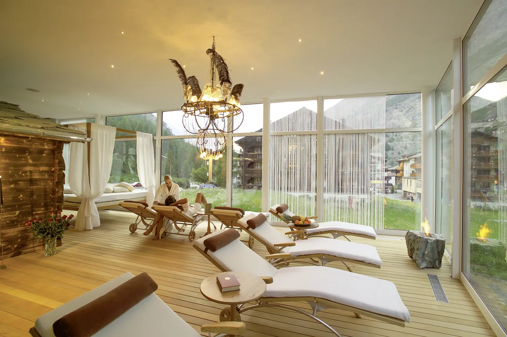
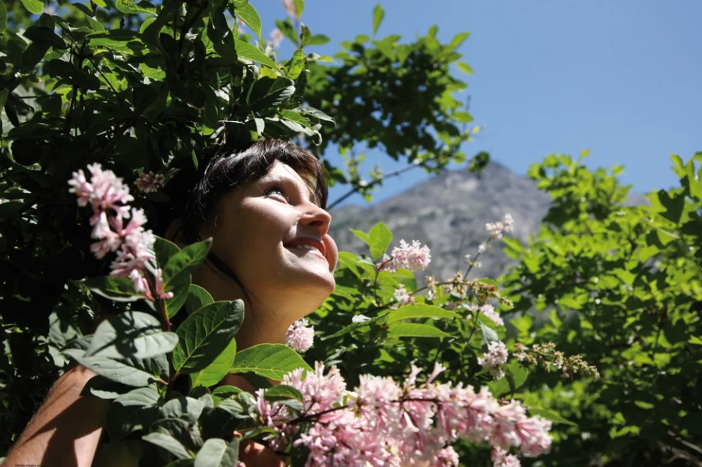
… und riechen Siedie Vielfalt verschiedenerDüfte, welche die Luftdes Sommers in den Bergenfür Sie bereit hält.
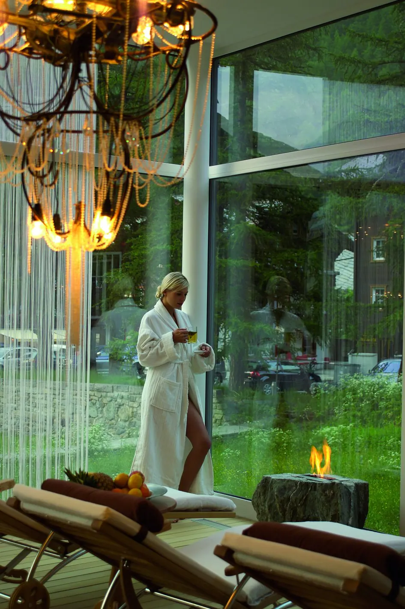
Körper, Geist& Seele.
Im Wellnesshotel Zurbriggen erwartet Sie eine exklusive 1.100 m² große Spa-Landschaft, inspiriert von der traditionellen chinesischen Medizin (TCM).
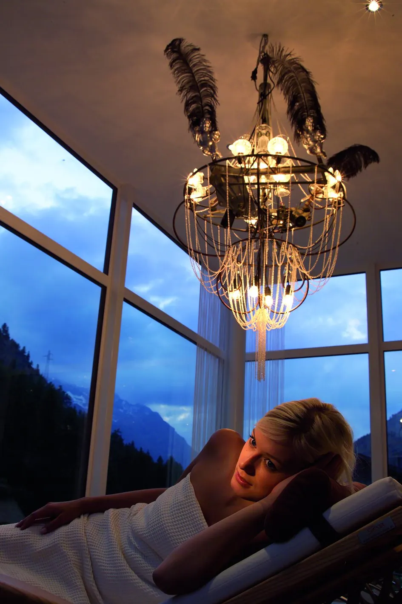
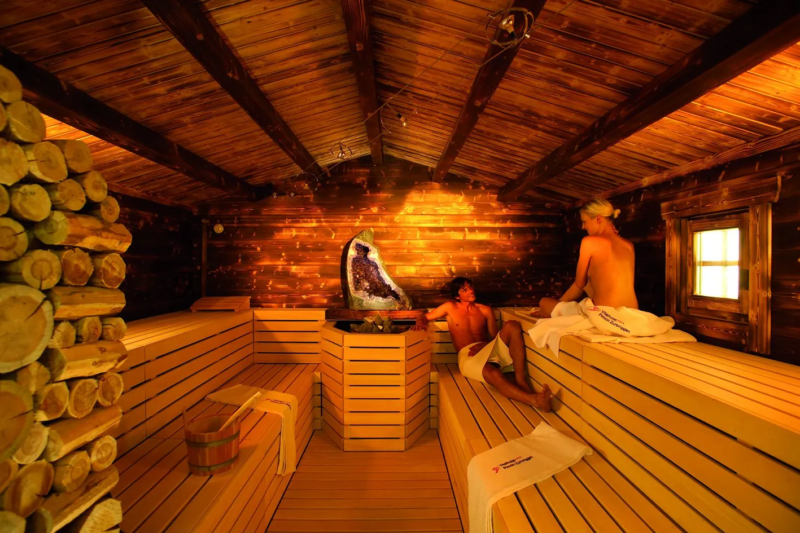

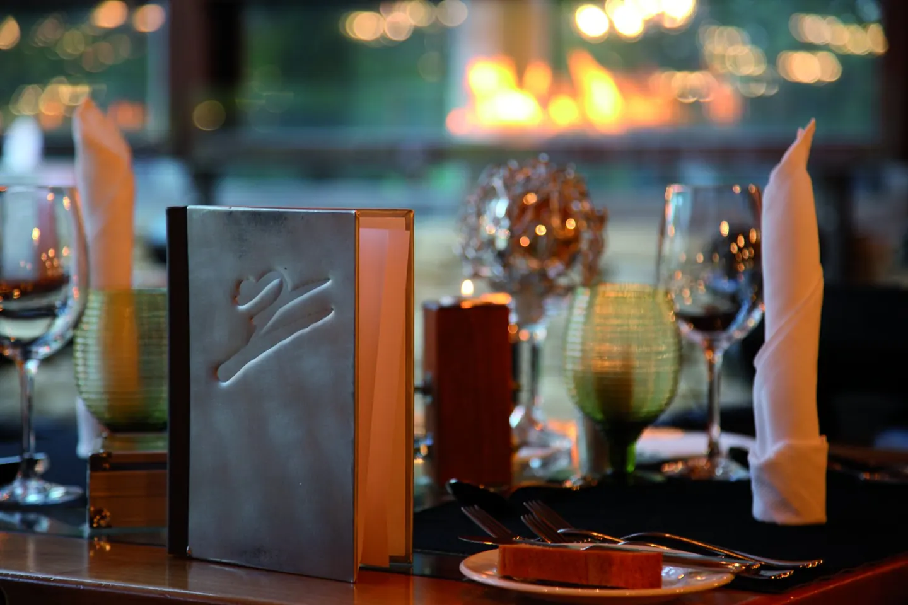
Als Nächstes · Gourmetsetzen Sie sich …